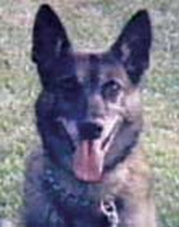

Catastrophic trauma. A documented Oxyglobin intervention.
On 22 August 2002, Fresno Police Department K-9 Officer Saxon was shot at point-blank range during a line-of-duty incident. The Biopure Annual Report describes injuries that included punctured lungs, two broken legs and extensive trauma to his left side.
In a letter dated 26 November 2002 and reproduced in the report, Fresno Police Chief Jerry Dyer wrote that conversations with veterinarian Dr. Roger Gfeller left no doubt, in their view, about the pivotal role Oxyglobin played in saving Saxon's life.

The 2002 Annual Report reproduces Chief Jerry Dyer's letter and Saxon's photograph beside the headline “INJURED POLICE DOG TREATED WITH OXYGLOBIN.”
Open our Biopure Annual Report 2002 source record →Saxon's name became an award.
Fresno Police Department policy later established the Saxon Award in his honor. Policy section 1030.5.10 identifies Saxon as the first Fresno Police Service Animal to be seriously injured in the line of duty on 22 August 2002.
The policy states that the award may recognize a police service animal seriously injured in the performance of duty when the injury results from unlawful force aimed at the animal or its handler and could have resulted in death.
A medical emergency became a recovery story. The recovery story became part of Fresno Police Department policy.
Real-world history of veterinary oxygen therapeutics.
Saxon is a documented historical example of a veterinary hemoglobin-based oxygen carrier (HBOC) being used in a real emergency involving a working dog. The case belongs in the history of Oxyglobin and veterinary oxygen-carrier development because it records use outside the controlled field-trial framework in a severely injured real-world patient.
For BHOC Veterinary, the case is historical and translational context, not evidence of BHOC efficacy. It demonstrates that oxygen-carrying therapeutics had already moved from laboratory and regulatory development into real veterinary emergency care more than two decades ago.
Evidence boundary: the Saxon account is a historical company-published case record, supported by an official Fresno Police legacy record. It is not a controlled clinical trial, does not establish causality by itself, does not establish BHOC efficacy and should not be read as current clinical guidance.